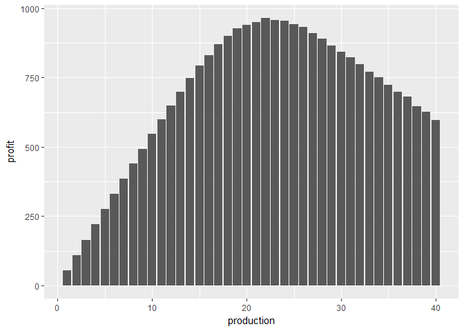
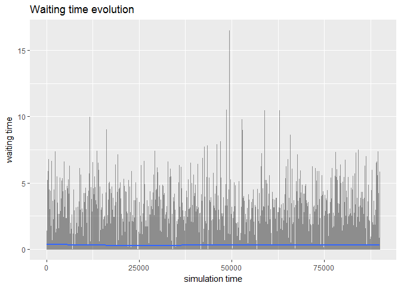

library(tidyverse)
library(simmer)
library(triangle)Week 7: Building Descriptive Models: Simulation
Lesson 1: Simulation Basics
QQ6
What is the quantity of rolls that Suzie should make each day in order to maximize profitability? Assume that the underlying demand ~N(20,5). Round your answer to the closest integer.
# set.seed(4)
data_frame(
production = rep(1:40, each = 1e4),
demand = rnorm(40e4, 20, 5) %>% round,
revenue = pmin(production, demand) * 80,
cost = production * 25,
profit = revenue - cost
) %>%
group_by(production) %>%
summarise_each(funs(mean)) %>%
ggplot(aes(production, profit)) +
geom_col()
Recitations
Problem: Boarding Pass Kiosks at Logan
Recitation 1.1
- Create a new model
- Create a Source for passengers
- Create a Sink for passengers to exit
- Specify the length of the simulation
- Run the model
- Create a Delay for kiosk use
- Create a Queue for waiting
- Run the model
- Let’s measure time in the queue
- Run the model
customer <-
create_trajectory("Customer's path") %>%
seize("Kiosk", 1) %>%
timeout(function() rtriangle(1, a = 0.5, b = 15, c = 5)) %>%
release("Kiosk", 1)
logan <-
simmer("Logan") %>%
add_resource("Kiosk", 6, 16) %>%
add_generator("Customer", customer, function() rexp(1, 30/60))Model is run.
logan %>% run(until = 9e4)## simmer environment: Logan | now: 90000 | next: 90000.5616572975
## { Resource: Kiosk | monitored: 1 | server status: 4(6) | queue status: 0(16) }
## { Generator: Customer | monitored: 1 | n_generated: 44740 }Average times.
logan %>% get_mon_arrivals %>%
mutate(flow_time = end_time - start_time, waiting_time = flow_time - activity_time) %>%
summarise_each(funs(mean), flow_time, activity_time, waiting_time) %>%
knitr::kable| flow_time | activity_time | waiting_time |
|---|---|---|
| 7.103312 | 6.822238 | 0.2810747 |
How many passengers made it.
logan %>% get_mon_arrivals %>%
mutate(flow_time = end_time - start_time, waiting_time = flow_time - activity_time) %>%
count(finished) %>%
knitr::kable| finished | n |
|---|---|
| TRUE | 44735 |
Recitation 1.2
- Create a Time Plot for queue size
- Change the queue capacity
- Run the model
- Scaling the Time Plot
- Run the model
Waiting times.
logan %>% plot_evolution_arrival_times("waiting_time")## `geom_smooth()` using method = 'gam'
Resource usage.
logan %>% plot_resource_usage("Kiosk", steps = TRUE)Recitation 1.3
- Create a Resource Pool
- Replacing the queue with a Seize
- Add a Release when done
- Relax capacity at delay
- Run the model
Resource utilization.
logan %>% plot_resource_utilization("Kiosk") +
geom_label(aes(label = Q50 %>% round(2), y = Q50, x = resource))Part 2 of Boarding Pass Problem
Recitation 1.4
- Create a Select Output
- Create a Resource Pool for CSRs
- Add a Service for seeing the CSRs
- Let’s measure time in the service
- Run the model
customer <-
create_trajectory("Customer's path") %>%
branch(
option = function() sample(1:2, 1, prob = c(0.8, 0.2)),
continue = c(F, F),
create_trajectory("Kiosk path") %>%
seize("Kiosk", 1) %>%
timeout(function() rtriangle(1, 0.5, 15, 5)) %>%
release("Kiosk", 1),
create_trajectory("CSR path") %>%
seize("CSR", 1) %>%
timeout(function() rtriangle(1, 3, 9, 6)) %>%
release("CSR", 1)
)
logan <-
simmer("Logan") %>%
add_resource("Kiosk", 6, 16) %>%
add_resource("CSR", 2) %>%
add_generator("Customer", customer, function() rexp(1, 0.5))Model is run.
logan %>% run(until = 9e4)## simmer environment: Logan | now: 90000 | next: 90000.1645318992
## { Resource: Kiosk | monitored: 1 | server status: 2(6) | queue status: 0(16) }
## { Resource: CSR | monitored: 1 | server status: 0(2) | queue status: 0(Inf) }
## { Generator: Customer | monitored: 1 | n_generated: 44389 }Average times.
logan %>% get_mon_arrivals(per_resource = TRUE) %>%
mutate(flow_time = end_time - start_time, waiting_time = flow_time - activity_time) %>%
group_by(resource) %>%
summarise_each(funs(mean), flow_time, activity_time, waiting_time) %>%
knitr::kable| resource | flow_time | activity_time | waiting_time |
|---|---|---|---|
| CSR | 6.329307 | 5.996547 | 0.3327607 |
| Kiosk | 6.928090 | 6.839436 | 0.0886546 |
Part 3a of Boarding Pass Problem
Recitation 1.5
- Define a timeout in the Seize
- Run the model
customer_csr <- create_trajectory("CSR path") %>%
seize("CSR", 1) %>%
timeout(function() rtriangle(1, 3, 9, 6)) %>%
release("CSR", 1)
customer_kiosk <- create_trajectory("Kiosk path") %>%
renege_in(5, customer_csr) %>%
seize("Kiosk", 1) %>%
renege_abort() %>%
timeout(function() rtriangle(1, 0.5, 15, 5)) %>%
release("Kiosk", 1)
customer <- create_trajectory("Customer's path") %>%
branch(
option = function() sample(1:2, 1, prob = c(0.8, 0.2)),
continue = c(F, F),
customer_kiosk,
customer_csr
)
logan <-
simmer("Logan") %>%
add_resource("Kiosk", 6, 16) %>%
add_resource("CSR", 2) %>%
add_generator("Customer", customer, function() rexp(1, 0.5))Model is run.
logan %>% run(until = 9e4)## simmer environment: Logan | now: 90000 | next: 90000.2151493929
## { Resource: Kiosk | monitored: 1 | server status: 3(6) | queue status: 0(16) }
## { Resource: CSR | monitored: 1 | server status: 1(2) | queue status: 0(Inf) }
## { Generator: Customer | monitored: 1 | n_generated: 45001 }How many people benefited from the redirecting technology?
logan %>% get_mon_arrivals(per_resource = TRUE) %>%
mutate(
flow_time = end_time - start_time,
waiting_time = flow_time - activity_time
) %>%
spread(resource, replication) %>%
group_by(name) %>%
summarise_each(
funs(sum(., na.rm = TRUE)),
flow_time, activity_time, waiting_time, CSR, Kiosk
) %>%
with(., table(CSR, Kiosk)) %>%
knitr::kable| 0 | 1 | |
|---|---|---|
| 0 | 0 | 35947 |
| 1 | 9008 | 41 |
Part 3b of Boarding Pass Problem
- Define a timeout in the Service
- Run the model